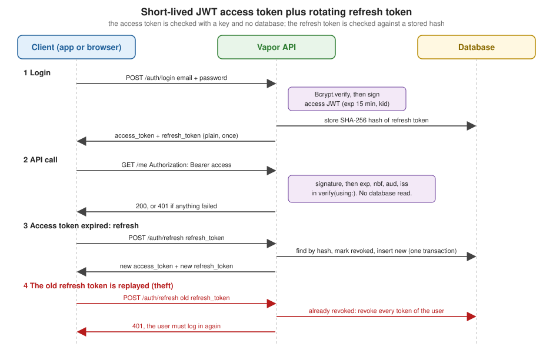

JSON Web Tokens (JWT)
|
This content was generated with the assistance of AI and should be verified against the official documentation before being relied on in production. |
This page is written against Vapor 4.122.2 on Swift 6.4 (the package builds in the Swift 6 language mode with tools
version 6.3, as the official template does; Vapor 4.122.2 itself needs tools version 6.0), with jwt 5.1.2 and jwt-kit
5.7.1 (which the jwt package resolves to), fluent 4.13.0 and fluent-sqlite-driver 4.9.0, checked on 2026-10-17. Every
Swift listing on this page was compiled in the Swift 6 language mode with zero warnings in a scratch package. The login,
refresh, role, JWKS and test examples were run (with curl against swift run App serve and with VaporTesting), and
the output shown is captured from those runs. The Bookshelf models are the ones of the earlier pages of this section;
the refresh token model is a page-local addition. Vapor 5 is at 5.0.0-beta.4 and is not released yet; the jwt package
on its main branch still depends on Vapor 4, so nothing here is known to change, but that was not tested against Vapor
5.
A JSON Web Token is a signed, compact JSON document, and it is the most common way to carry an identity from a login
endpoint to every later API call without a server-side session. The protocol theory (JOSE, JWS, JWK, claims, algorithms)
is on the JWT and JOSE page and the token lifetimes and rotation rules on
Access and refresh tokens; this page covers the Vapor side: how to
configure keys, describe claims in Swift, sign and verify, plug a token into req.auth, publish and consume JWKS, and
what goes wrong.
When a JWT is the right token
Vapor offers three ways to remember a user between requests, and the authentication pages of this section (Authentication, Fluent Authentication and API Tokens, Session Authentication and Web Login) cover each:
| Mechanism | Strength | Cost |
|---|---|---|
Server-side session (the Sessions and Cookies page) |
Instantly revocable, the browser holds only an opaque ID, no claims to go stale |
Needs shared storage; cookies suit browsers, not mobile or service clients |
Opaque bearer token stored as a hash (the Fluent Authentication and API Tokens page) |
Instantly revocable, one database lookup per request, no cryptography to get wrong |
A database read on every request; every service that checks it needs database access |
JWT |
Checked with a key and no I/O; several services can verify the same token, even without sharing a database |
Cannot be revoked before it expires; the claims are readable by the client and go stale; algorithm and claim checks are on you |
A good default for a first-party browser application is a session. A JWT earns its place when several parties must verify the same token independently (microservices, an API gateway (see Microservices and an API Gateway), a mobile app plus a web API), or when the token comes from somebody else (Sign in with Apple, Google, an identity provider). When you do use one, keep the access token short-lived and pair it with a refresh token you can revoke, which is the design built later on this page.
The packages
Two packages are involved, and the names matter when you read errors and documentation:
-
jwt-kit (JWTKit) is the framework-independent library, built on SwiftCrypto and swift-certificates. It implements signing, parsing, the claims, JWK and JWKS, and the key collection. It has no dependency on Vapor.
-
jwt is the Vapor integration. It re-exports JWTKit, so
import JWTis enough, and addsapp.jwt,req.jwt, theJWTAuthenticatorprotocol, the vendor helpers (Apple, Google, Microsoft, Firebase) and theAbortErrorconformance that turns everyJWTErrorinto a 401.
jwt 5.0.0 (October 2024) rewrote the API around async/await and an actor (see the version notes at the end); 5.1.2 is
the latest release, and jwt-kit moves faster (5.7.1 on 2026-09-12) because it is a separate package. Add the dependency
like any other:
// Package.swift (excerpt)
dependencies: [
.package(url: "https://github.com/vapor/vapor.git", from: "4.122.2"),
.package(url: "https://github.com/vapor/jwt.git", from: "5.1.2"),
],
targets: [
.executableTarget(name: "App", dependencies: [
.product(name: "Vapor", package: "vapor"),
.product(name: "JWT", package: "jwt"),
]),
]The listings below pin both packages exactly so that the captured output is reproducible. A jwt-kit release that is
newer than the one shown is picked up automatically by from: (the jwt package asks for jwt-kit 5.1.0 or later), so
run your tests when you update.
Where it runs in the request
JWT is not a middleware. Nothing happens to a request just because the package is linked in. Two things can touch a token:
-
a handler (or any code with a
Request) callingreq.jwt.verify(as:)orreq.jwt.sign(_:), and -
an authenticator middleware, which is how the official documentation wires tokens into
req.auth. It runs in the route group where you register it, after the global middleware (ErrorMiddleware, CORS, logging; see the Middleware page) and after routing has chosen the group.
The order inside the authenticator is worth memorising, because every bug in this area is a step that was skipped:
parse, select the key, verify the signature, and only then run the payload’s own verify(using:). A token that fails
any step throws, and ErrorMiddleware renders the error. A request with no bearer header is not an error for the
authenticator: it simply does nothing, and it is the guardMiddleware() after it that answers 401. That split lets one
route group serve both anonymous and signed-in visitors if you leave the guard out.
Keys: JWTKeyCollection and app.jwt.keys
app.jwt.keys is a JWTKeyCollection, JWTKit’s key store. It is an actor, so every call from outside needs await,
and it can be created independently of Vapor (JWTKeyCollection()), which the JWKS section below uses. The collection
maps a key identifier (kid) to a signer, and remembers one default signer. Signing uses the key you name (or the
default); verifying reads the kid from the token’s header, finds that key and checks the signature with it.
The app.jwt value is a small Sendable struct that stores the collection in app.storage behind a lock, so reading
app.jwt.keys from any route closure is safe under Swift 6. Assigning a new collection (app.jwt.keys =
JWTKeyCollection(...)) replaces the whole store, which is what you do to inject custom JSON coders or a logger.
The algorithms
| Call | JWA name | Notes |
|---|---|---|
|
HS256, HS384, HS512 |
Symmetric: the same secret signs and verifies, so every service that verifies can also forge. Fine for one service that both issues and checks its own tokens. The secret should be at least as long as the hash output (32 bytes for HS256). |
|
ES256, ES384, ES512 |
Asymmetric on P-256, P-384 and P-521. A private key signs and verifies; a public key only verifies, so it can be given to other services. A good default for tokens that other parties verify. |
|
EdDSA (Ed25519) |
Asymmetric, small and fast, less widely supported by other JWT libraries and identity products. |
|
RS256, RS384, RS512 |
RSA with PKCS#1 v1.5 padding. JWTKit puts the key types in the |
|
PS256, PS384, PS512 |
RSA with PSS padding, the better of the two RSA schemes when you must use RSA. |
The same file shows each of them, with the key material taken from parameters (never from string literals in real code):
// KeySnippets.swift
import JWT
import Vapor
/// Every key type JWTKit 5 can add, in one place. The PEM strings come from the environment or a secret store.
func addKeys(
to keys: JWTKeyCollection,
ecPrivatePEM: String,
ecPublicPEM: String,
rsaPublicPEM: String
) async throws {
// HMAC (symmetric): the same secret signs and verifies.
await keys.add(hmac: HMACKey(from: "change-me-change-me-change-me-32"), digestAlgorithm: .sha256, kid: "hs-1")
// ECDSA: a private key signs and verifies, a public key only verifies.
await keys.add(ecdsa: try ES256PrivateKey(pem: ecPrivatePEM), kid: "es-1")
await keys.add(ecdsa: try ES256PublicKey(pem: ecPublicPEM), kid: "es-verify-only")
// EdDSA (Ed25519).
await keys.add(eddsa: try EdDSA.PrivateKey(curve: .ed25519), kid: "ed-1")
// RSA lives in the Insecure namespace on purpose: use it only to interoperate.
let rsa = try Insecure.RSA.PublicKey(pem: rsaPublicPEM)
await keys.add(rsa: rsa, digestAlgorithm: .sha256, kid: "rs-verify-only") // RS256, PKCS#1 v1.5
await keys.add(pss: rsa, digestAlgorithm: .sha256, kid: "ps-verify-only") // PS256
}Notes on these calls, all checked against the 5.7.1 source:
-
A verify-only key (a public key, or an RSA public key) can be added and used by
verify; asking to sign with it fails. The listing’s run signs withes-1anded-1and verifies both from the same collection. -
ES256PrivateKey()creates a random key, which suits tests and the throwaway example below.ES256PrivateKey(pem:)loads a PEM from a string, which is how a real key arrives from a secret store or a mounted file.EdDSA.PrivateKey(curve:)is a throwing initializer in 5.7.1; some documentation shows it withouttry. -
All of the
addmethods are@discardableResultand return the collection, so calls can be chained inside the actor, but each call from outside needs its ownawait. -
A
ES256PublicKeyPEM, anEdDSA.PublicKey(x:curve:)coordinate and aJWKall produce keys you can verify with but never sign with. -
JWTKit 5.7.1 also contains ML-DSA (post-quantum) signers and an
addUnsecuredNonemethod for thenonealgorithm. Neither belongs in an application that authenticates users:addUnsecuredNoneregisters the unsecurednonealgorithm, which its own documentation says is unsuitable where authentication matters. Never call it. A collection without it rejectsalg: nonetokens, which the tests below confirm.
An HMAC key from the environment
The simplest configuration, and the one used by the rest of the page, is one HMAC key whose secret comes from the environment:
// JWTSetup.swift
import JWT
import Vapor
struct MissingSecret: Error {}
func configureJWT(_ app: Application) async throws {
// HS256 needs a secret at least as long as the hash output (32 bytes).
// Production must provide JWT_SECRET; development and tests fall back to an obvious placeholder.
let secret: String
if let fromEnvironment = Environment.get("JWT_SECRET") {
secret = fromEnvironment
} else if app.environment == .production {
throw MissingSecret()
} else {
app.logger.warning("JWT_SECRET is not set; using the development placeholder")
secret = "change-me-change-me-change-me-32"
}
guard secret.utf8.count >= 32 else { throw MissingSecret() }
await app.jwt.keys.add(hmac: HMACKey(from: secret), digestAlgorithm: .sha256, kid: "hs-2026-10")
}Source: Vapor docs: JWT, Configuration
The development placeholder is obvious on purpose and is refused in production: the application will not start without
JWT_SECRET when the environment is production. Generate a real secret with a password manager or openssl rand
-base64 48, store it in your secret manager, and rotate it with the kid mechanism below. See the
Configuration and Environment page for how Environment.get,
.env files and the environment names work.
kid, the default key and rotation
Every key can carry a kid. When you sign, the kid is written into the token’s header; when you verify, JWTKit reads
the header’s kid and looks the key up. Rotation is therefore: add a new key under a new kid, start signing with it,
keep the old key verify-only until the last token it signed has expired, then remove it.
There is one behaviour that surprises people, and the Vapor documentation states only half of it. The default key is
the one used when no kid is given, and in jwt-kit 5.7.1 the first key added becomes the default even if it was added
with a kid, and an unknown or missing kid in a token falls back to the default. This was run:
let issuer = JWTKeyCollection()
await issuer.add(hmac: HMACKey(from: "change-me-change-me-change-me-32"), digestAlgorithm: .sha256, kid: "old")
let token = try await issuer.sign(AccessToken(userID: UUID(), role: .reader), kid: "old")
let verifier = JWTKeyCollection()
await verifier.add(hmac: HMACKey(from: "change-me-change-me-change-me-32"), digestAlgorithm: .sha256, kid: "new")
_ = try await verifier.verify(token, as: AccessToken.self) // verified: kid "old" is unknown, so the default "new" is tried(The two collections share a secret in the example, so the default key’s signature check passes; with different secrets
the same call throws signatureVerificationFailed.) What this means for rotation:
-
A token cannot force a wrong key on you: an unknown
kidis only ever checked against a key you configured, and the signature must still match. There is no algorithm confusion either, because the algorithm is a property of the stored key, not of the token’salgheader. -
The old key is still live as the default if it was added first. Retiring it means
await app.jwt.keys.remove(kid:), which also clears the default when it was the one removed, orclearDefault()when every key has akid. AfterclearDefault()the same verification throwsnoKeyProvided, as does a token with nokidheader at all. -
verify(_:as:iteratingKeys: true)tries every key in the collection when the first attempt fails. It exists for migrations from tokens with nokid; it makes verification slower, and a failure costs one signature check per key.
A rotation, in order: add the new key with its kid, deploy; change the signing code to use the new kid, deploy; wait
at least the token lifetime; remove the old kid. Because every instance of the application needs the new key before
any instance signs with it, the first deploy must finish everywhere before the second starts.
Payloads and claims
A payload is a Codable + Sendable type that conforms to JWTPayload, whose single requirement is func
verify(using algorithm: some JWTAlgorithm) async throws. JWTKit calls it right after the signature check passes and
before returning the payload to you, and it is the place for every claim check. The standard claims are small wrapper
types, one per registered claim (RFC 7519):
| Claim | Swift type | Value | Check helper |
|---|---|---|---|
|
|
|
none: compare the value yourself |
|
|
|
none: compare the value yourself |
|
|
|
|
|
|
|
|
|
|
|
|
|
|
|
none |
|
|
|
none: track used IDs yourself if you need single use |
|
|
|
none |
JWTKit also defines claims for particular issuers (GoogleHostedDomainClaim, TenantIDClaim) and BoolClaim for the
providers that send booleans as strings. Claims are built from a value (SubjectClaim(value: "...")); the ones that
wrap a string are also ExpressibleByStringLiteral.
Presence of a claim is not verification. The most common JWT bug in any language is declaring var exp:
ExpirationClaim and never calling verifyNotExpired(): the claim then decodes and is ignored, and tokens never expire.
JWTKit does not check exp for you. The payload used on this page checks all four things a resource server should:
// AccessToken.swift
import JWT
import Vapor
/// Values every token of this service shares. The issuer and audience are plain strings here;
/// a real deployment reads them from configuration.
enum TokenPolicy {
static let issuer = "https://bookshelf.example.com"
static let audience = "bookshelf-api"
static let accessLifetime: TimeInterval = 15 * 60
static let refreshLifetime: TimeInterval = 30 * 24 * 60 * 60
}
/// The claims inside an access token. `Authenticatable` lets the same value be stored in `req.auth`.
struct AccessToken: JWTPayload, Authenticatable {
enum CodingKeys: String, CodingKey {
case subject = "sub"
case issuer = "iss"
case audience = "aud"
case expiration = "exp"
case notBefore = "nbf"
case issuedAt = "iat"
case tokenID = "jti"
case role
}
var subject: SubjectClaim // the user ID
var issuer: IssuerClaim
var audience: AudienceClaim
var expiration: ExpirationClaim
var notBefore: NotBeforeClaim
var issuedAt: IssuedAtClaim
var tokenID: IDClaim
var role: UserRole // a custom claim
init(userID: UUID, role: UserRole, now: Date = .now) {
self.subject = SubjectClaim(value: userID.uuidString)
self.issuer = IssuerClaim(value: TokenPolicy.issuer)
self.audience = AudienceClaim(value: [TokenPolicy.audience])
self.expiration = ExpirationClaim(value: now.addingTimeInterval(TokenPolicy.accessLifetime))
self.notBefore = NotBeforeClaim(value: now)
self.issuedAt = IssuedAtClaim(value: now)
self.tokenID = IDClaim(value: UUID().uuidString)
self.role = role
}
/// Called after the signature has been checked. Nothing is verified unless it is verified here.
func verify(using algorithm: some JWTAlgorithm) async throws {
try expiration.verifyNotExpired()
try notBefore.verifyNotBefore()
try audience.verifyIntendedAudience(includes: TokenPolicy.audience)
guard issuer.value == TokenPolicy.issuer else {
throw JWTError.claimVerificationFailure(failedClaim: issuer, reason: "unexpected issuer")
}
}
var userID: UUID? { UUID(uuidString: subject.value) }
}Points about this listing:
-
The
CodingKeysmap readable Swift names to the three-letter registered names. Without them the token would contain"subject"and"expiration", and no other library would understand it. A custom claim such asroleneeds no mapping. -
verifyNotExpiredandverifyNotBeforecompare againstDate()with no leeway. If your servers' clocks may differ by a few seconds, passcurrentDate: .now.addingTimeInterval(-30)to the first and.addingTimeInterval(30)to the second. -
The issuer and audience checks are what stop a token meant for another service (or another environment) being accepted here. A shared secret across staging and production, with no
audorisscheck, makes a staging token valid in production. -
Dates are encoded as seconds since 1970 with a fractional part (the signed output below contains
"exp":1792257203.175401). RFC 7519 allows that, but some libraries on other platforms expect whole numbers. If a consumer is strict, build the payload with dates rounded to whole seconds (Date(timeIntervalSince1970: seconds.rounded())). -
The role is a snapshot. A token minted for a librarian stays a librarian token for its 15 minutes even if the account is demoted or deleted a second later. The authenticator section below shows the alternative that loads the user.
-
Authenticatableis an empty marker protocol, so adding it costs nothing and lets the payload live inreq.auth. -
The payload is
Sendablebecause every value inside it is, whichJWTPayloadrequires.
The payload is public. A JWT is signed, not encrypted: anyone holding the token can read the claims (base64url-decode the middle segment). Put nothing in it that the client should not see, and keep it small, since it travels on every request. Decoding a token this service issued (the throwaway development secret, copied from a real run):
{"alg":"HS256","typ":"JWT","kid":"hs-2026-10"}{
"sub": "67AD1294-ECBF-4142-91BF-CE429A0FD421",
"aud": "bookshelf-api",
"iss": "https://bookshelf.example.com",
"iat": 1792256303.175401,
"nbf": 1792256303.175401,
"exp": 1792257203.175401,
"jti": "18A60F9D-726E-4037-A15A-8BE86E70DB84",
"role": "librarian"
}(Key order is not stable, because the payload is encoded from a dictionary-like structure; do not compare token strings.)
Signing and verifying
req.jwt is a small wrapper around req.application.jwt.keys:
| Call | What it does |
|---|---|
|
Serialises and signs, returning the compact string. |
|
Reads |
|
The same for a token string or bytes from somewhere else (a cookie, a query parameter, a WebSocket message). |
|
The same operations without a request, for startup code, commands and tests. |
|
Decodes the payload without checking the signature or running |
The smallest complete use is two routes, signing in one and verifying in the other (this is the official documentation’s
example, applied to the AccessToken payload):
app.post("demo", "token") { req async throws -> [String: String] in
let payload = AccessToken(userID: UUID(), role: .reader)
return ["token": try await req.jwt.sign(payload, kid: "hs-2026-10")]
}
app.get("whoami") { req async throws -> String in
let token = try await req.jwt.verify(as: AccessToken.self) // 401 if absent, malformed, forged or expired
return token.subject.value
}Source: Vapor docs: JWT, Verifying
Headers can be customised when signing:
/// Header customisation, an unverified peek, and trying every key.
func headerAndPeek(app: Application, token: String) async throws {
var header = JWTHeader()
header.typ = "at+jwt"
let signed = try await app.jwt.keys.sign(
AccessToken(userID: UUID(), role: .reader), kid: "hs-2026-10", header: header)
// Reads the claims WITHOUT checking the signature or `verify(using:)`. Never use the result to authorise anything.
let peek = try await app.jwt.keys.unverified(signed, as: AccessToken.self)
app.logger.info("token for \(peek.subject.value)")
// Try every key when the `kid` is missing or unknown (slower, and only for migrations).
_ = try? await app.jwt.keys.verify(token, as: AccessToken.self, iteratingKeys: true)
}What a failure looks like
Every JWTError conforms to AbortError with status 401 (that conformance is the whole of JWTError+Vapor.swift in
the jwt package), and ErrorMiddleware turns it into a JSON body. Captured from the running service with the
throwaway development key:
$ curl -si localhost:8091/me
HTTP/1.1 401 Unauthorized
{"reason":"AccessToken not authenticated.","error":true}
$ curl -si localhost:8091/me -H "authorization: Bearer not-a-jwt"
HTTP/1.1 401 Unauthorized
{"reason":"Token is not split in 3 parts","error":true}
# a token whose signature (or payload) was altered, or one signed with alg none
HTTP/1.1 401 Unauthorized
{"reason":"JWTKitError(errorType: signatureVerificationFailed)","error":true}
# an access token whose exp is in the past, and one with the wrong audience
HTTP/1.1 401 Unauthorized
{"reason":"expired","error":true}
{"reason":"not intended for bookshelf-api","error":true}Three things to know. First, the reasons are for you, not for clients: signatureVerificationFailed and the claim
reasons tell an attacker which check failed. In production, replace them with a generic body in a small error middleware
or by customising the error response (see the Error Handling page) and log the
real reason. Second, a client cannot tell "expired, refresh me" from "forged, give up" by status code alone; if your
clients should refresh automatically, return a distinct, documented signal (a WWW-Authenticate: Bearer
error="invalid_token" header, as RFC 6750 defines, or a stable error code in the JSON). Third, a request with no bearer
header is logged at the error level inside req.jwt.verify ("Request is missing JWT bearer header"), so anonymous
traffic to a manually verified route is noisy; the authenticator plus guard pattern does not log it.
A complete flow: login, access token, refresh token
The design that follows is the standard answer to "JWTs cannot be revoked":

-
The access token is a JWT that lives 15 minutes. Verifying it costs a signature check and no I/O.
-
The refresh token is a 256-bit random string. The server stores only its SHA-256 hash, so a database leak does not hand out usable tokens. (A fast hash is correct here, unlike for passwords: the input already has 256 bits of entropy, so there is nothing to brute-force.) It lasts 30 days and is used exactly once.
-
Using a refresh token marks it revoked and issues a new pair, in one transaction. If an already-revoked token arrives, the server assumes it was stolen and revokes every refresh token of that user, forcing a new login.
-
Logout revokes the presented refresh token. The access token simply expires.
The model and its migration are page-local additions to the Bookshelf schema (a refresh_tokens table with a unique
token_hash and a foreign key to users):
// RefreshToken.swift
import Crypto
import Fluent
import Vapor
/// Page-local addition to the Bookshelf models: server-side refresh tokens. Only a SHA-256 hash is stored.
final class RefreshToken: Model, @unchecked Sendable {
static let schema = "refresh_tokens"
@ID(key: .id) var id: UUID?
@Parent(key: "user_id") var user: User
@Field(key: "token_hash") var tokenHash: String
@Field(key: "expires_at") var expiresAt: Date
@OptionalField(key: "revoked_at") var revokedAt: Date?
init() {}
init(userID: User.IDValue, tokenHash: String, expiresAt: Date) {
self.$user.id = userID; self.tokenHash = tokenHash; self.expiresAt = expiresAt
}
/// A 256-bit random value from the system generator, base64url encoded. This is what the client holds.
static func makeSecret() -> String {
let bytes = (0..<32).map { _ in UInt8.random(in: .min ... .max) }
return Data(bytes).base64EncodedString()
.replacingOccurrences(of: "+", with: "-")
.replacingOccurrences(of: "/", with: "_")
.replacingOccurrences(of: "=", with: "")
}
/// What is stored: the digest of the secret, so a database leak does not leak usable tokens.
static func hash(_ secret: String) -> String {
SHA256.hash(data: Data(secret.utf8)).map { String(format: "%02x", $0) }.joined()
}
}
struct CreateRefreshToken: AsyncMigration {
func prepare(on db: any Database) async throws {
try await db.schema("refresh_tokens").id()
.field("user_id", .uuid, .required, .references("users", "id", onDelete: .cascade))
.field("token_hash", .string, .required)
.field("expires_at", .datetime, .required)
.field("revoked_at", .datetime)
.unique(on: "token_hash")
.create()
}
func revert(on db: any Database) async throws { try await db.schema("refresh_tokens").delete() }
}The routes sign the access token, rotate refresh tokens in a transaction, and register the protected routes (the
transaction and Fluent update() calls are explained on the
Transactions, Model Middleware and Soft Delete
page):
// AuthRoutes.swift
import Fluent
import JWT
import SQLKit
import Vapor
struct LoginRequest: Content {
var email: String
var password: String
}
struct RefreshRequest: Content {
var refreshToken: String
enum CodingKeys: String, CodingKey { case refreshToken = "refresh_token" }
}
struct TokenPair: Content {
var accessToken: String
var refreshToken: String
var tokenType = "Bearer"
var expiresIn: Int
enum CodingKeys: String, CodingKey {
case accessToken = "access_token", refreshToken = "refresh_token"
case tokenType = "token_type", expiresIn = "expires_in"
}
}
struct MeResponse: Content {
var id: String
var role: UserRole
var expiresAt: Date
}
/// A bcrypt digest at the default cost (12) of a random value nobody knows. Login checks it when the email is
/// unknown, so that path takes as long as a wrong password.
let decoyPasswordHash = "$2b$12$cwtmiw/PGEeRlFeEtZOLQOyhVsuLH0fbTqlhzH1nD4BVbfc9ALXCK"
/// Signs an access token and stores a fresh refresh token for `user`.
func issueTokens(for user: User, on req: Request, db: any Database) async throws -> TokenPair {
let userID = try user.requireID()
let access = AccessToken(userID: userID, role: user.role)
let signed = try await req.jwt.sign(access, kid: "hs-2026-10")
let secret = RefreshToken.makeSecret()
try await RefreshToken(
userID: userID,
tokenHash: RefreshToken.hash(secret),
expiresAt: Date.now.addingTimeInterval(TokenPolicy.refreshLifetime)
).save(on: db)
return TokenPair(accessToken: signed, refreshToken: secret, expiresIn: Int(TokenPolicy.accessLifetime))
}
func authRoutes(_ app: Application) {
let auth = app.grouped("auth")
auth.post("login") { req async throws -> TokenPair in
let login = try req.content.decode(LoginRequest.self)
let user = try await User.query(on: req.db).filter(\.$email == login.email.lowercased()).first()
// Verify on the thread pool, and against a decoy digest when the email is unknown,
// so both failure paths cost one bcrypt check.
let matches = try await req.password.async.verify(
login.password, created: user?.passwordHash ?? decoyPasswordHash)
guard let user, matches else {
// One message for "no such user" and "wrong password".
throw Abort(.unauthorized, reason: "Invalid email or password")
}
return try await issueTokens(for: user, on: req, db: req.db)
}
auth.post("refresh") { req async throws -> TokenPair in
let body = try req.content.decode(RefreshRequest.self)
let hash = RefreshToken.hash(body.refreshToken)
guard let stored = try await RefreshToken.query(on: req.db)
.filter(\.$tokenHash == hash).with(\.$user).first()
else { throw Abort(.unauthorized, reason: "Invalid refresh token") }
if stored.revokedAt != nil {
// A rotated token came back: assume theft and end every session of this user.
try await RefreshToken.query(on: req.db)
.filter(\.$user.$id == stored.$user.id).filter(\.$revokedAt == nil)
.set(\.$revokedAt, to: .now).update()
throw Abort(.unauthorized, reason: "Refresh token reuse detected")
}
guard stored.expiresAt > .now else { throw Abort(.unauthorized, reason: "Refresh token expired") }
// Rotate in one transaction. The conditional UPDATE claims the token: when two requests race with the
// same token, only one finds revoked_at still NULL and gets a row back.
return try await req.db.transaction { db in
guard let sql = db as? any SQLDatabase else { throw Abort(.internalServerError) }
let claimed = try await sql.update(RefreshToken.schema)
.set("revoked_at", to: Date.now)
.where("id", .equal, stored.requireID())
.where("revoked_at", .is, SQLLiteral.null)
.returning("id")
.all()
guard !claimed.isEmpty else { throw Abort(.unauthorized, reason: "Refresh token reuse detected") }
return try await issueTokens(for: stored.user, on: req, db: db)
}
}
auth.post("logout") { req async throws -> HTTPStatus in
let body = try req.content.decode(RefreshRequest.self)
let hash = RefreshToken.hash(body.refreshToken)
try await RefreshToken.query(on: req.db).filter(\.$tokenHash == hash).filter(\.$revokedAt == nil)
.set(\.$revokedAt, to: .now).update()
return .noContent // the same answer whether or not the token existed
}
// Authenticator + guard: 401 unless a valid access token was presented.
let protected = app.grouped(AccessToken.authenticator(), AccessToken.guardMiddleware())
protected.get("me") { req async throws -> MeResponse in
let token = try req.auth.require(AccessToken.self)
return MeResponse(id: token.subject.value, role: token.role, expiresAt: token.expiration.value)
}
// A role check on top of the token (see the authorization page of this section).
protected.grouped(RequireRole(.librarian)).get("librarian", "desk") { req async throws -> String in
"welcome to the desk"
}
// Manual style, no authenticator: verify inside the handler.
app.get("whoami") { req async throws -> String in
let token = try await req.jwt.verify(as: AccessToken.self)
return token.subject.value
}
}
struct RequireRole: AsyncMiddleware {
let allowed: Set<UserRole>
init(_ roles: UserRole...) { self.allowed = Set(roles).union([.admin]) }
func respond(to request: Request, chainingTo next: any AsyncResponder) async throws -> Response {
let token = try request.auth.require(AccessToken.self)
guard allowed.contains(token.role) else { throw Abort(.forbidden) }
return try await next.respond(to: request)
}
}The pieces worth a second look:
-
Login answers "Invalid email or password" for both an unknown email and a wrong password, so the endpoint does not reveal which emails have accounts. It also takes about as long for both: an unknown email is checked against
decoyPasswordHash, a digest at the same cost as real ones, so response time is not an oracle either. The email is lower-cased before the lookup, matching how registration stores it. -
req.password.async.verifyruns bcrypt on Vapor’s thread pool and has anasyncoverload, so it is awaited directly. The synchronousBcrypt.verifywould block the event loop for the whole check. Add rate limiting in front of login; password hashing details (Bcrypt, cost,req.password) belong to the Passwords and Crypto page; the Security Hardening page covers rate limiting. -
Rotation is atomic. The refresh route claims the old token with one conditional
UPDATE refresh_tokens SET revoked_at = ? WHERE id = ? AND revoked_at IS NULL RETURNING id, written with SQLKit because Fluent’supdate()does not report how many rows changed. When two requests race with the same token, the database lets only one of them match the row, so only one new pair is issued. Reading the row, settingrevokedAtand saving it would let both requests pass the check before either writes.RETURNINGworks on PostgreSQL and SQLite; on MySQL lock the row withSELECT ... FOR UPDATEinside the transaction instead. -
issueTokenstakes the database to write to as a parameter, so the refresh route can pass the transaction’s connection while the login route passesreq.db. ARequesthas no way to swap its database, which is why the parameter exists. -
AccessToken.authenticator()comes from theJWTPayload where Self: Authenticatableextension in thejwtpackage. It is anAsyncBearerAuthenticatorthat callsreq.jwt.verifyand thenreq.auth.login(payload). -
AccessToken.guardMiddleware()throwsAbort(.unauthorized, reason: "AccessToken not authenticated.")unless a payload is logged in. Passthrowing:to change the error. -
RequireRoleis an ordinaryAsyncMiddlewareplaced after the guard, so a missing token is a 401 and a valid token with too little privilege is a 403. Role and ownership design is the subject of the Authorization: Roles, Ownership and Policies page. -
/whoamishows the manual style, with no authenticator at all: the handler verifies for itself. That is fine for a route or two; for a group, use the authenticator so the check cannot be forgotten.
Run it (development environment seeds two throwaway accounts, reader@example.com and lib@example.com; the long token
strings are shortened):
$ JWT_SECRET=... swift run App serve --port 8091 # or omit it in development: the placeholder is used and logged
$ curl -s -X POST localhost:8091/auth/login -H 'content-type: application/json' \
-d '{"email":"lib@example.com","password":"lib-pass"}'
{"access_token":"eyJ0eXAiOiJKV1Qi...","token_type":"Bearer","refresh_token":"d_YzFw0_ob3R5sc8ZwEjdO1Hq...","expires_in":900}
$ curl -si localhost:8091/me -H "authorization: Bearer $ACCESS"
HTTP/1.1 200 OK
{"expiresAt":"2026-10-17T17:13:23Z","id":"67AD1294-ECBF-4142-91BF-CE429A0FD421","role":"librarian"}
$ curl -s localhost:8091/librarian/desk -H "authorization: Bearer $ACCESS"
welcome to the desk
$ curl -s -X POST localhost:8091/auth/refresh -H 'content-type: application/json' -d "{\"refresh_token\":\"$REFRESH\"}"
{"expires_in":900,"refresh_token":"...","access_token":"...","token_type":"Bearer"}
$ curl -si -X POST localhost:8091/auth/refresh -H 'content-type: application/json' -d "{\"refresh_token\":\"$REFRESH\"}" # the same token again
HTTP/1.1 401 Unauthorized
{"reason":"Refresh token reuse detected","error":true}(The access_token and refresh_token values above are the throwaway output of a local development run; they are not
credentials for anything.)
Loading the user instead of trusting the claims
The authenticator above puts the payload in req.auth, so a handler sees what the token said at login. When a handler
needs the current database row (or a disabled or deleted account must stop working immediately) use the
JWTAuthenticator protocol to verify the JWT and then load the user:
// ActiveUser.swift
import Fluent
import JWT
import Vapor
extension User: Authenticatable {}
/// Verifies the JWT, then loads the user so that handlers see the current database row, not the claims.
struct ActiveUserAuthenticator: JWTAuthenticator {
typealias Payload = AccessToken
func authenticate(jwt: AccessToken, for request: Request) async throws {
guard let id = jwt.userID, let user = try await User.find(id, on: request.db) else {
return // unknown user: stay unauthenticated, the guard below answers 401
}
request.auth.login(user)
}
}
func activeUserRoutes(_ app: Application) {
let protected = app.grouped(ActiveUserAuthenticator(), User.guardMiddleware())
protected.get("me", "profile") { req async throws -> [String: String] in
let user = try req.auth.require(User.self)
return ["email": user.email, "role": user.role.rawValue]
}
}This costs one primary-key lookup per request, so it gives up the "no database" advantage of a JWT in exchange for instant effect. The difference was run: the librarian’s account was deleted while the token was still valid.
GET /me/profile -> 200 {"email":"lib@example.com","role":"librarian"} (before the delete)
GET /me/profile -> 401 {"error":true,"reason":"User not authenticated."} (after the delete: the authenticator found no user)
GET /me -> 200 (claims only: the token still says librarian)Choose per route group: the cheap claims-only check for low-risk reads, the loading authenticator for anything that changes data or reveals private records.
JWKS: publishing keys and verifying someone else’s tokens
When a different service verifies your tokens (or you verify tokens from an identity provider), nobody wants to copy
key files around. A JSON Web Key Set (JWKS, RFC 7517) is a JSON document of public keys, each with a kid, served
from a well-known URL. The verifier fetches it, picks the key by kid, and re-fetches when the issuer rotates.
JWTKit has the pieces on both sides: JWK, JWKS, JWTKeyCollection.add(jwks:) and add(jwksJSON:), and Vapor adds
JWKSCache, a typealias for EndpointCache<JWKS> that fetches with req.client and honours Cache-Control, Expires
and ETag.
The listing has an issuer (KeyRing, an actor holding ES256 private keys and the JWKS built from their public halves),
the JWKS route, a token route, and a resource server (RemoteVerifier) that trusts whatever the issuer publishes:
// KeyRing.swift
import JWT
import Vapor
/// Claims of a service-to-service token signed with an asymmetric key.
struct ServiceToken: JWTPayload {
enum CodingKeys: String, CodingKey {
case subject = "sub", audience = "aud", expiration = "exp"
}
var subject: SubjectClaim
var audience: AudienceClaim
var expiration: ExpirationClaim
func verify(using algorithm: some JWTAlgorithm) async throws {
try expiration.verifyNotExpired()
try audience.verifyIntendedAudience(includes: "inventory-service")
}
}
/// The public document served at /.well-known/jwks.json.
struct JWKSDocument: Content {
var keys: [JWK]
}
/// An issuer: signs with ES256 private keys and publishes the matching public keys.
actor KeyRing {
private let signing = JWTKeyCollection()
private var published: [JWK] = []
func add(kid: String, key: ES256PrivateKey) async throws {
let identifier = JWKIdentifier(string: kid)
await signing.add(ecdsa: key, kid: identifier)
guard let (x, y) = key.publicKey.parameters else { throw Abort(.internalServerError) }
// JWK coordinates are base64url without padding; `parameters` returns standard base64.
published.append(.ecdsa(.es256, identifier: identifier, x: Self.base64URL(x), y: Self.base64URL(y), curve: .p256))
}
func sign(_ payload: some JWTPayload, kid: String) async throws -> String {
try await signing.sign(payload, kid: JWKIdentifier(string: kid))
}
/// Stop publishing a key (after the last token signed with it has expired).
func retire(kid: String) async {
published.removeAll { $0.keyIdentifier?.string == kid }
await signing.remove(kid: JWKIdentifier(string: kid))
}
func document() -> JWKSDocument { JWKSDocument(keys: published) }
private static func base64URL(_ standard: String) -> String {
standard.replacingOccurrences(of: "+", with: "-")
.replacingOccurrences(of: "/", with: "_")
.replacingOccurrences(of: "=", with: "")
}
}
/// A resource server that trusts whatever keys an issuer publishes at `jwksURL`.
struct RemoteVerifier: Sendable {
let cache: JWKSCache // honours Cache-Control, Expires and ETag
init(jwksURL: String) { self.cache = JWKSCache(uri: URI(string: jwksURL)) }
func verify<Payload: JWTPayload>(_ token: String, as: Payload.Type, on req: Request) async throws -> Payload {
// `get(on:)` always revalidates over the network; `get(using:logger:on:)` serves the cache while it is fresh.
let jwks = try await cache.get(using: req.client, logger: req.logger, on: req.eventLoop).get()
let keys = try await JWTKeyCollection().add(jwks: jwks)
return try await keys.verify(token, as: Payload.self)
}
}
func keyRingRoutes(_ app: Application, ring: KeyRing, jwksURL: String) {
app.get(".well-known", "jwks.json") { _ async throws -> Response in
let response = Response(status: .ok, body: .init(data: try JSONEncoder().encode(await ring.document())))
response.headers.contentType = .json
// Lets JWKSCache (and browsers, CDNs) reuse the answer instead of fetching it on every request.
response.headers.cacheControl = .init(isPublic: true, maxAge: 300)
return response
}
// Issues a short-lived service token. Real services authenticate the caller first.
app.post("service", "token") { req async throws -> [String: String] in
let claims = ServiceToken(
subject: "catalog-service",
audience: "inventory-service",
expiration: .init(value: .now.addingTimeInterval(300))
)
return ["token": try await ring.sign(claims, kid: "es-2026-10")]
}
let verifier = RemoteVerifier(jwksURL: jwksURL)
app.get("service", "check") { req async throws -> String in
guard let token = req.headers.bearerAuthorization?.token else { throw Abort(.unauthorized) }
let claims = try await verifier.verify(token, as: ServiceToken.self, on: req)
return "accepted \(claims.subject.value)"
}
}Details that were found by running it and reading the 4.122.2 / 5.7.1 sources:
-
Coordinates must be base64url without padding.
ES256PublicKey.parametersreturns thexandycoordinates as standard base64 (with+,/and=). A JWK needs the URL-safe alphabet and no padding, so the listing converts before building theJWK. A JWKS with standard base64 would not be understood by other libraries. -
The served document, captured from the running service (a freshly generated key, so these coordinates are throwaway):
{"keys":[{"kid":"es-2026-10","alg":"ES256","kty":"EC","crv":"P-256","x":"ZB83-RO2FO8hahWkTllZolpoHxb9FCTBUlzBUDKvVoY","y":"dPAOBh7mqLKpu8hKHp-o8RTtJMXQy1cxttkBnvBliXo"}]} -
Only publish public keys.
JWK.ecdsa(..., privateKey:)would put the private scalar into the document. The listing never passes it. -
EndpointCache.get(on: req)always goes to the network. In Vapor 4.122.2 theget(on:)overload calls the download directly (it sendsIf-None-Match/If-Modified-Sincewhen it already has the headers, but it still makes a request), and the local cache is consulted only byget(using:logger:on:). The listing therefore callsget(using:logger:on:). This was measured: withCache-Control: public, max-age=300on the JWKS response and three calls to/service/check, the JWKS endpoint was requested once withget(using:logger:on:), and on every call withget(on:). The built-in Apple, Google and Microsoft helpers (below) useget(on:)internally, so they re-download the vendor’s key set on each verification in this version unless you wrap them yourself. -
The listing builds a new
JWTKeyCollectionper request from the cachedJWKS, which is what Vapor’s own vendor helpers do and is cheap for a handful of keys. For a hot path keep the collection and rebuild it only when theJWKSchanges. -
Rotation, as the issuer sees it, is
ring.add(kid: "es-2", ...), start signing withes-2, keep publishinges-1until its tokens have expired, thenring.retire(kid: "es-1"). The run of this sequence (verifying anes-1token and anes-2token through one JWKS, then retiringes-1and watching its token fail) passed in the test suite. -
A
JWKcarrying akidis required foradd(jwk:); one without throwsinvalidJWK("Missing KID"). -
Be careful what trust a JWKS URL gives. Whoever controls the document controls which tokens are valid, so fetch it only over HTTPS from a URL you configured, never from the
jkuorjwkheader of the token being verified (JWTKit does not follow those headers, and you must not add that).
Running the service with JWKS_URL pointing at its own endpoint:
$ curl -s -X POST localhost:8091/service/token # signed ES256, kid es-2026-10
$ curl -s localhost:8091/service/check -H "authorization: Bearer $ST"
accepted catalog-service
$ curl -si localhost:8091/service/check -H "authorization: Bearer ${ST%?}x" # last character altered
HTTP/1.1 401 Unauthorized
{"error":true,"reason":"JWTKitError(errorType: signatureVerificationFailed)"}Tokens from Apple, Google, Microsoft and Firebase
The jwt package ships verifiers for the identity tokens of the common providers. Each one downloads the provider’s
JWKS (Apple: https://appleid.apple.com/auth/keys; Google: https://www.googleapis.com/oauth2/v3/certs), verifies the
signature, and then checks the audience (and for Google the G Suite domain) when you have configured them:
app.jwt.apple.applicationIdentifier = Environment.get("APPLE_APP_ID") // the app's bundle or service ID
app.jwt.google.applicationIdentifier = Environment.get("GOOGLE_CLIENT_ID")
app.jwt.google.gSuiteDomainName = Environment.get("GOOGLE_HOSTED_DOMAIN")
app.jwt.microsoft.applicationIdentifier = Environment.get("MICROSOFT_CLIENT_ID")
app.get("apple") { req async throws -> String in
let token = try await req.jwt.apple.verify() // AppleIdentityToken from the bearer header
return token.subject.value
}Two cautions. If you do not set the application identifier, the helpers verify the signature but skip the audience
check, and any Apple-signed token for any app would pass; always set it, or pass applicationIdentifier: to verify.
And the get(on:) point above applies: the key set is downloaded per call. The complete sign-in flows (the web flow,
account linking, handling Apple’s first-sign-in-only name) are on the
OAuth and Sign in with Apple page; the protocol side is on the
ID tokens versus access tokens page.
The Apple, Google and Microsoft helper listings above were compiled only for the configuration properties shown; they were not run against the real providers, which would need real client identifiers and tokens.
Testing
VaporTesting (see the Testing page) boots the application in memory, so the tests below
run the real routes, the real middleware and a real SQLite database. They create two throwaway users, log in through
/auth/login, and exercise the failure paths that production traffic will find:
// AuthFlowTests.swift
import Fluent
import JWT
import Testing
import VaporTesting
@testable import App
/// Boots the app with two throwaway users, runs `body`, and always shuts the app down.
private func withApp(_ body: (Application) async throws -> Void) async throws {
let app = try await Application.make(.testing)
do {
try await configure(app)
try await User(email: "reader@example.com", passwordHash: Bcrypt.hash("reader-pass", cost: 4), role: .reader).save(on: app.db)
try await User(email: "lib@example.com", passwordHash: Bcrypt.hash("lib-pass", cost: 4), role: .librarian).save(on: app.db)
try await body(app)
} catch {
try await app.asyncShutdown()
throw error
}
try await app.asyncShutdown()
}
private func send(
_ app: Application, _ method: HTTPMethod, _ path: String,
bearer: String? = nil, json: (any Content)? = nil
) async throws -> (status: HTTPStatus, body: String) {
var result = (status: HTTPStatus.internalServerError, body: "")
try await app.testing().test(method, path, beforeRequest: { req in
if let bearer { req.headers.bearerAuthorization = .init(token: bearer) }
if let json { try req.content.encode(json) }
}, afterResponse: { res async in
result = (res.status, res.body.string)
})
return result
}
private func login(_ app: Application, _ email: String, _ password: String) async throws -> TokenPair {
let response = try await send(app, .POST, "auth/login", json: LoginRequest(email: email, password: password))
#expect(response.status == .ok)
return try JSONDecoder().decode(TokenPair.self, from: Data(response.body.utf8))
}
@Suite(.serialized) struct AuthFlowTests {
@Test func validTokenReachesTheHandler() async throws {
try await withApp { app in
let pair = try await login(app, "reader@example.com", "reader-pass")
let me = try await send(app, .GET, "me", bearer: pair.accessToken)
#expect(me.status == .ok)
}
}
@Test func missingTamperedAndForeignTokensGet401() async throws {
try await withApp { app in
let pair = try await login(app, "reader@example.com", "reader-pass")
var parts = pair.accessToken.split(separator: ".").map(String.init)
#expect(try await send(app, .GET, "me").status == .unauthorized) // no header
#expect(try await send(app, .GET, "me", bearer: "not-a-jwt").status == .unauthorized) // not three parts
let first = parts[2].removeFirst()
parts[2].insert(first == "A" ? "B" : "A", at: parts[2].startIndex) // flip signature bits
#expect(try await send(app, .GET, "me", bearer: parts.joined(separator: ".")).status == .unauthorized)
}
}
@Test func claimsAreChecked() async throws {
try await withApp { app in
let id = try #require(try await User.query(on: app.db).first()?.requireID())
let expired = AccessToken(userID: id, role: .reader, now: Date(timeIntervalSinceNow: -3600))
var wrongAudience = AccessToken(userID: id, role: .reader)
wrongAudience.audience = AudienceClaim(value: ["some-other-api"])
for payload in [expired, wrongAudience] {
let token = try await app.jwt.keys.sign(payload, kid: "hs-2026-10")
#expect(try await send(app, .GET, "me", bearer: token).status == .unauthorized)
}
}
}
@Test func roleCheckIsA403NotA401() async throws {
try await withApp { app in
let reader = try await login(app, "reader@example.com", "reader-pass")
let librarian = try await login(app, "lib@example.com", "lib-pass")
#expect(try await send(app, .GET, "librarian/desk", bearer: reader.accessToken).status == .forbidden)
#expect(try await send(app, .GET, "librarian/desk", bearer: librarian.accessToken).status == .ok)
}
}
@Test func replayedRefreshTokenRevokesTheUser() async throws {
try await withApp { app in
let first = try await login(app, "reader@example.com", "reader-pass")
let rotated = try await send(app, .POST, "auth/refresh", json: RefreshRequest(refreshToken: first.refreshToken))
#expect(rotated.status == .ok)
let second = try JSONDecoder().decode(TokenPair.self, from: Data(rotated.body.utf8))
// The old token is replayed: rejected, and the new one dies with it.
#expect(try await send(app, .POST, "auth/refresh", json: RefreshRequest(refreshToken: first.refreshToken)).status == .unauthorized)
#expect(try await send(app, .POST, "auth/refresh", json: RefreshRequest(refreshToken: second.refreshToken)).status == .unauthorized)
}
}
}Source: Vapor docs: Testing
Captured from swift test --filter AuthFlowTests:
✔ Test validTokenReachesTheHandler() passed
✔ Test missingTamperedAndForeignTokensGet401() passed
✔ Test claimsAreChecked() passed
✔ Test roleCheckIsA403NotA401() passed
✔ Test replayedRefreshTokenRevokesTheUser() passed
✔ Suite AuthFlowTests passed
✔ Test run with 5 tests in 1 suite passedNotes on writing these tests:
-
A token for the negative cases is minted by
app.jwt.keys.signwith a payload whosenow:is an hour ago, or whose audience is different, rather than by waiting. The payload initialiser takesnowfor exactly this reason. -
To tamper with a signature, change a character near the start of it. The last base64url character of a 32-byte HMAC carries unused bits, so altering only that character can leave the decoded bytes unchanged and the "tampered" token still valid.
-
.serializedis used because every test shares the in-memory SQLite database name; use a per-test file or a unique database for parallel tests (see the Fluent Overview and Drivers page). -
Run assertions after
app.testing().test(...)returns, using values captured in the response closure. The listing’ssendhelper does that.
Other tests run for this page (not listed): alg: none with an empty signature is rejected with
signatureVerificationFailed; a payload edited to claim "role":"admin" while keeping the original signature is
rejected; the kid fallback and clearDefault() behaviour described above; and a JWKS rotation round trip.
Swift 6 concurrency notes
-
JWTKeyCollectionis anactor. Its methods areasyncfrom outside, which is whyadd,signandverifyneedawait, and why a verifier can be shared across requests without a lock. Creating signing keys inconfigure(_:)is fine becauseconfigureis alreadyasync. A synchronous context (an oldconfigureor a lifecycle handler that is notasync) cannot callapp.jwt.keys.adddirectly; make that functionasyncrather than blocking on a task. -
JWTPayloadrequiresSendable(aCodable & Sendablecomposition), so a payload type must be a value type ofSendablemembers. A payload with a reference-type member (a Fluent model, a class) does not compile in the Swift 6 language mode; keep IDs in the payload and load the model. -
JWTPayload.verify(using:)isasync throws, so it can do I/O (a revocation list lookup, for instance). Keep it cheap: it runs on every authenticated request. -
The route closures and middleware that call
req.jwt.verifyare@Sendable; they captureappor aKeyRing(an actor) and never a mutable local. TheKeyRingactor in the JWKS listing serialises key additions and document reads. See the Swift Concurrency in Vapor page and the Actors, Isolation and Sendable page of the Swift Reference. -
The
EndpointCacheAPI isEventLoopFuture-based (a Vapor 4 type), so the JWKS listing bridges with.get().
Common errors and pitfalls
-
Tokens that never expire. The payload has an
expclaim butverify(using:)never callsverifyNotExpired(). Add the check and a test that mints an old token. -
A short HMAC secret. A short secret is easy to guess offline from any token. JWTKit 5.7.1 guards this with an
assert, not a precondition: a debug build of the application traps with "Key should be at least as large as the hash output: 32 bytes. This will become a precondition in a future release." (seen when running a test with a three-byte secret), while a release build accepts it silently. The setup listing rejects secrets under 32 bytes in every build. -
The same secret in every environment. Staging tokens then work in production. Use different keys, and check
aud/iss. -
value of type 'JWTKeyCollection' ... expression is 'async', or "actor-isolated … can not be referenced from a nonisolated context". Call keys methods withawaitfrom anasynccontext. -
'add(hmac:...)' has no memberor an unresolvedsigners. That is jwt 4 code (app.jwt.signers.use(.hs256(key:))); jwt 5 usesapp.jwt.keys.add(hmac:digestAlgorithm:). See the version notes. -
A 401 with
noKeyProvided. No key matched and there is no default: a token with no or an unknownkidafterclearDefault(), orconfigurenever added a key (check the order: keys are added before the first request). -
A 401 with
signatureVerificationFailedfor a token that looks right. The verifying instance uses a different secret or key, or the token was signed by a collection with another key under the samekid. In a multi-instance deployment, make sure every instance reads the sameJWT_SECRET. -
malformedToken("Token is not split in 3 parts"). The client sentBearer Bearer ..., an empty token, a quoted token, or a JWE (five parts, encrypted); JWTKit handles signed JWTs (JWS) only. -
Trusting the
algheader. JWTKit does not: the algorithm belongs to the stored key. Do not add code that readsalgto decide how to verify. -
Reading claims from
unverified. The unverified helper runs no checks. Use it only to choose a verifier. -
Using the access token as a session. Storing it in
localStorageexposes it to any script injected into the page; for a browser, prefer anHttpOnlycookie (see the Sessions and Cookies page) or a proper session, and keep tokens in the Keychain or Keystore on mobile (see Full-Stack Swift with iOS Clients). -
Logging tokens.
Authorizationheaders must stay out of logs; Vapor’s request logging does not print them, but a handler that logsreqorreq.headersdoes. -
A refresh token stored in plain text. Store the hash; a leak of the table would otherwise be a leak of every session.
-
Expecting logout to invalidate the access token. It cannot. Keep the lifetime short, and use the loading authenticator for actions that must stop at once.
-
Parallel refreshes from a client. Of two simultaneous refresh calls with the same token, the conditional update lets one win and answers the other with a 401; if the client then retries with the old token, that is reuse and revokes the user. Clients must serialise refreshes (one in flight, other requests wait), or the server needs a short grace window that this listing omits.
-
Clock skew.
nbfandexpare compared with the verifier’s clock; a few seconds of drift gives sporadic 401s. Add small leeway as described under claims.
Security checklist
The Security Hardening page covers the rest of the service around these points.
-
Prefer ES256 or EdDSA when other parties verify; use HS256 only when one service issues and verifies, with a secret of at least 32 random bytes held in a secret manager.
-
Always set and check
issandaud; always checkexp(andnbfwhen you set it). -
Keep access tokens short (minutes) and refreshable; store refresh tokens hashed, rotate on use, detect reuse.
-
Never accept
alg: none: do not calladdUnsecuredNone. -
Do not put secrets or personal data in claims; they are readable.
-
Serve JWKS over HTTPS and only public keys; fetch remote JWKS only from a configured URL.
-
Return generic 401 bodies in production and log the detailed reason.
-
Terminate TLS and send tokens only over HTTPS. The broader checklist is on the OAuth security best practices page.
Version notes and outdated material
-
jwt 4 to jwt 5. The 4.x API (
app.jwt.signers.use(.hs256(key: "secret")), a synchronoustry req.jwt.verify(as:), andfunc verify(using signer: JWTSigner) throwson the payload) is gone. In 5.x the store is theJWTKeyCollectionactor (await app.jwt.keys.add(hmac:digestAlgorithm:)), signing and verifying areasync, and the payload requirement isfunc verify(using algorithm: some JWTAlgorithm) async throws. The 4.x line is kept on the repository’sv4branch. Older blog posts and Stack Overflow answers that useJWTSigners,JWTSigner.hs256orjwt.signersare for 4.x. The Vapor documentation page still showsswift-tools-version:5.10andfrom: "5.0.0"in its sample manifest. -
EdDSA initialiser. The documentation shows
EdDSA.PrivateKey(curve: .ed25519)withouttry; in jwt-kit 5.7.1 it throws. -
Default key. The documentation says a key without a
kidbecomes the default; in 5.7.1 the first key added is also the default when it has akid, and an unknownkidfalls back to it (shown above). -
Dates.
exp,nbfandiatare written with a fractional part by default. -
The books. None of the books in this section’s bibliography covers jwt 5 or JWTKit 5. Material from the Vapor 3 era configures JWT through that version’s service and config system, and the 4.x examples use
JWTSigners; verify any older snippet against the 5.x API before copying it. Books that store a login token in a database table (Condon, Patel) are describing the opaque-token design of the Fluent Authentication and API Tokens page, which remains valid and is the right answer when you need instant revocation. -
Vapor 5. Vapor 5 is 5.0.0-beta.4 and is not released. The
jwtpackage’smainbranch (5.1.x) still requires Vapor 4 (from: "4.101.0"), so there is no Vapor 5 version of theapp.jwtandreq.jwtAPIs yet; read its upgrade notes before moving.
References
-
JWT and JOSE (the protocol side)